Regular expressions¶
[1]:
from tock import *
Regular expressions in Tock use the following operators:
|or∪for unionconcatenation for concatenation
*for Kleene star
This is very similar to Unix regular expressions, but because a symbol can have more than one character, consecutive symbols must be separated by a space. Also, for the empty string, you must write ε (or &). The empty set is written as ∅.
To create a regular expression from a string (Sipser, Example 1.56):
[2]:
r = RegularExpression.from_str('(a b|a)*')
r
[2]:
However, there isn’t much you can do with a RegularExpression object other than to convert it to an NFA.
From regular expressions to NFAs¶
[3]:
m = from_regexp(r) # from RegularExpression object
m = from_regexp('(a b|a)*') # a str is automatically parsed into a RegularExpression
The regular expression is converted into a finite automaton, which you can view, as usual, as either a graph or a table.
[4]:
to_graph(m)
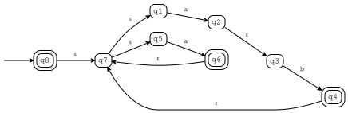
[5]:
to_table(m)
[5]:
| ε | a | b | |
|---|---|---|---|
| q1 | q2 | ||
| q2 | q3 | ||
| q3 | q4 | ||
| @q4 | q7 | ||
| q5 | q6 | ||
| @q6 | q7 | ||
| q7 | {q1,q5} | ||
| >@q8 | q7 |
The states are numbered according to the position in the regular expression they came from (so that listing them in alphabetical order is natural). The letter suffixes are explained below.
We can also pass the display_steps=True option to show the automata created for all the subexpressions.
[6]:
m = from_regexp('(a b|a)*', display_steps=True)
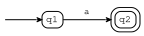
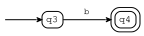
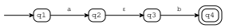
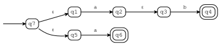
From NFAs to regular expressions¶
The to_regexp function converts in the opposite direction:
[7]:
e = to_regexp(m)
e
[7]:
The resulting regular expression depends a lot on the order in which states are eliminated; Tock eliminates states in reverse alphabetical order.
Again, the display_steps option causes all the intermediate steps of the conversion to be displayed.
[8]:
e = to_regexp(m, display_steps=True)
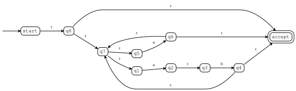
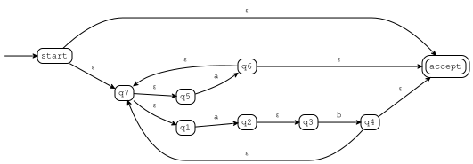
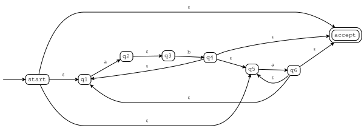
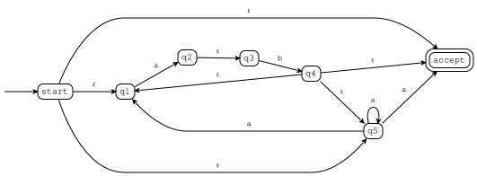
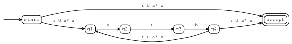
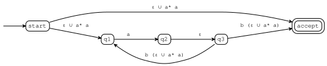
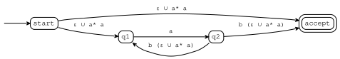
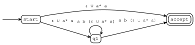
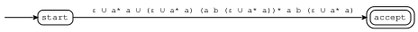